Format Menu
The Format menu contains commands that affect the appearance of individual items in the map. Items can be either devices (routers, servers, hosts, etc.) or networks (drawn as ovals, by default.)
| Menu Command | Description |
| Icon... | Choose an icon for the selected items. |
| Label... | Modifies the label of one or more items from the map. Devices and networks have text labels that identify the item. These labels may be generated automatically from information gathered from the device, or contain static text that you enter. |
| Label Position (submenu) | Change the position of the label relative to an item. |
| Align... | Align the selected objects to each other. |
| Rotate... | Rotate the positions of the selected objects in relation to each other. |
| Scale... | Scale the positions of the selected items in relation to each other. |
| Arrange (submenu) | Rearrange the selected items into a cycle, bus, or star. |
| Context menu | Set the Font, Size, and Style of the selected devices from the context menu |
Icon
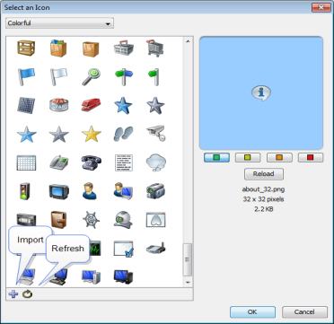
Use the Icon command to select an icon for a device or network as it appears on your map. The Select an Icon window appears.
- Click an icon from those displayed in the left box. It appears in preview box on the right.
- Click OK to assign the icon to the selected devices or networks.
- From the drop-down menu at the top of the window, choose a group of icons. The Built-in Shapes are shown below.
- Click Import... to import an image as an icon.
- When viewing groups of icons other than Built-in Shapes, click Reload to refresh the icon list in the left box.
- Drag an image to the window to import it as an icon.
- Drag a folder of images to the window to import the contents as a new icon group.
For more information, see Custom Icons.
Built-in Shapes
Use the icons in the Built-in Shapes icon group.
Note: Except for the Wire icon, all Built-in Shapes stretch to enclose the specified label text.

|
Rectangle and Oval |
Rectangles and Ovals contain the text label within them. Rectangle is the default shape for a device. |
| Wire |
The Wire item is drawn as a straight line. Connections to the wire are drawn at right angles to the wire if possible.
|
|
| Cloud |
Cloud items contain the text label within them. |
|
| 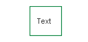 | Text |
The font, style, and color are controlled by the other choices in the Format menu. The border of the item appears only when the item is selected. |
|
|
Icon |
Choose from a set of default icons or create your own. See Custom Icons to learn more about adding icons to InterMapper's set. |
Label
Each item in your map has a label. Use the Label... command from the Format menu to edit labels for the selected items.
Default Labels
- Device - its Smart Name.
- Network- IP address or range.
The Edit Device Label window
The example below shows the window for editing an item's label.
- Top pane - lists
the label as it will be displayed.
The entries in <...> are variables which are filled in with the values from the particular device or network.
Press Enter to move text or variables to a new line. - Lower-left pane - displays a list of variables that may be used in the top pane; the lower-right pane shows the definition of each variable
To insert a variable into the item's label:
In the top pane, place your cursor where you want to place the variable.
In the Lower-left pane, double-click variable you want to insert. The variable appears in the top pane, enclosed in <...>.
Tip: To move text or a variable to a new line, place the cursor where you want the new line to start and press Enter.
Label Variables
Use label variables to help you see the item information you consider most important.
Device Variables
Network Variables
Label Position
Choose from these nine positions:
Note: The label position affects only Wire and Icon shapes.
Align
Align the selected items relative to each other. The Align ... buttons work like other drawing programs.
Rotate
|
Rotate the selected items (but not their icons or text labels) by the specified number of degrees. |
Rotate the positions (but not the text or icons) of the selected items as a group. Items are rotated clockwise by the number of degrees specified. The example at left shows the window for rotating items. |

Scale
|
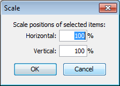 Scaling item positions. Specify the amount (percentage) to change the positions both vertically and horizontally. |
Change the relative spacing of the selected items. This is useful after arranging items in a star to increase or decrease the diameter of the circle. The example at left shows the interface. |
Arrange (submenu)
If no objects are selected, Organic and Tree commands work on all objects on a map. For Star and Bus, you must select at least one object. For Cycle, you must select at least two object. All commands will work on two or more objects.
Organic
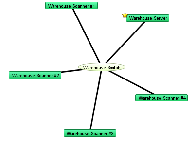
Arrange items with a minimum number of crossed links and overlaid objects.
Tree
Arrange items in a tree structure. Choose which direction the branches of the tree should go.
| 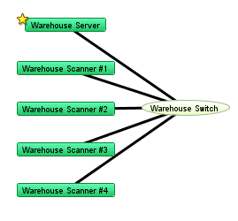 | 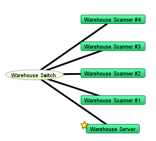 |
| Tree - left | Tree - right |
|
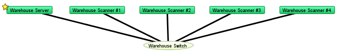
Tree - up |
|
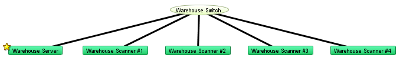
Tree - down |
Cycle
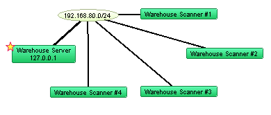
Move the selected items into an oval around the edge of the window. This allows you to see the interconnections between the devices of your network more easily. The Cycle example in Using the Arrange Commands illustrates the Cycle command's action.
Bus
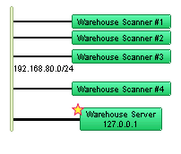
Arrange items into a vertical column, changing the item that connects them into a vertical bus shape. This might represent a group of devices connected by an Ethernet or other broadcast medium. The Bus example in Using the Arrange Commands illustrates the Bus command's action.
Note: The Bus command affects only items that are connected to networks.
Star
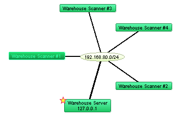
Arrange items so they surround a network or device that connects them. The devices will be spaced equally around the circumference of a circle. The Star example in Using the Arrange Commands illustrates the Star command's action.
Features available only from the Context Menu
Font, Size, and Style
You can change the attributes for each label in your map.
- Choose from Font, Size or Style from the context menu to change the label's font, font size, and font style.
Note: The Font, Size, and Style attributes affect all labels in the selected objects. The Color attribute affects the text color only when the shape is set to Text. These functions are also available from the Edit Device Label... dialog.